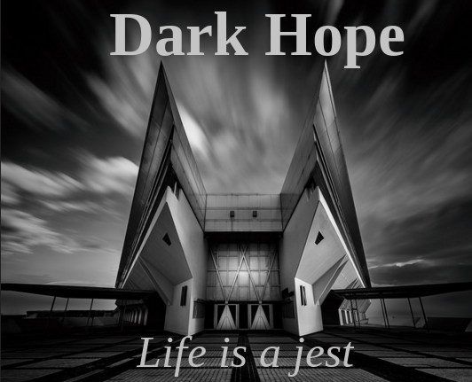

Challenge: Design a Band
Challenge information
---What is design thinking? Why are we studying it?
Design thinking is when you think of a design based on the
audience you are trying to appeal to. We are studying it
because it is important in our life. If you know how to
appeal to people they'll be more likely to want what you
are advertising. If you make things based on demand you
are bound to be more popular and make more moeny. That's
why companies have advertising departments.
---What
are the steps of the DEEP design thinking process?
The first step is to find out what people want. You can
do this by taking surveys to find out people's preferences.
Then the next step is to use the information you gathered
in your product. This will make it appeal more to people
based on your surveys. The end product will be somthing
that you know people would like based on the information
you gathered.
---Summarize the steps that we did in
class to make the album cover.
We first did surveys
on our classmates to find out what most of them liked. Then
we used a random wikipedia page generator to generate band
names and song names. Then we found a picture that matched
the result of our surveys for what people wanted. And then we
edited the photo to have the names of our band and song and
that was our album cover.
Album Cover
Band Biography
There are 5 members that formed their band in their college days in a town in Switzerland. They spent their days making punk classical music and called their band Rusted Metal. However as they grew up they hit harder times and could support themselves with just music. They took on different jobs and had a hard time making music. However they became lucky one day and was able to get a great gig in their most desperate of times. They became a huge hit and was able to live more comfortably. They found this abrupt change almost laughable and decided to rename their band Dark Hope since they found hope at the darkest of times and the album they made was called Life is a Jest since now their life is comfortable and fun like a game. The picture of the album was the building where they had their life changing gig. They were at their darkest but the building still stood tall and welcomed them.